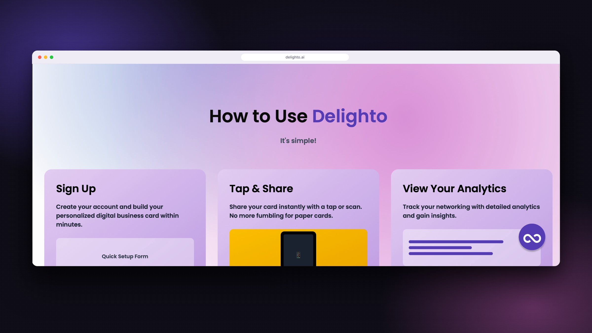
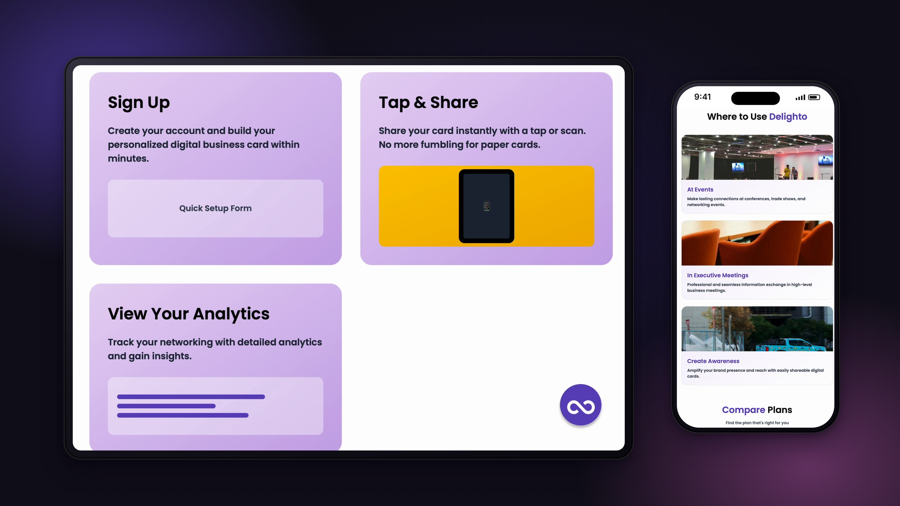

Delighto.ai
Delighto.ai is a digital business card platform, and I built the front end of its website redesign from the team's Figma designs.
- Year
- 2026
- Context
- Client project
- Role
- Web developer

/ Problem
Delighto.ai makes digital business cards that professionals share with a tap or scan. Before the redesign, the platform had been built without user research, so its website was hard to navigate and didn't explain the product's value. It also had no companion app and no social media presence.
/ Decision 01
Research.
We ran a heuristic evaluation and competitive analysis of Popl, Blinq and Mobilo, then interviewed five professionals. Competitors buried their features under cluttered product pages, and interviewees said follow-up is the biggest breakdown in networking.
/ Decision 02
Scope.
With the client, we focused the product on sales teams and contact exchange. The website became one focused landing page, and the app gained a "nudges" feature for follow-up, which came straight out of the interviews.
/ Decision 03
Design to code.
I led the design-to-code handoff, using Figma's developer tools and Figma Make to scaffold the front end in TypeScript, React and Tailwind CSS. We structured it into reusable components like buttons, cards and sections, which kept the site consistent with our design system.

/ Decision 04
Design fidelity.
The generated code got the structure right but lost precision in spacing and detail. I compared the build side by side with Figma for type, spacing, color and component behavior, and rewrote sections until they matched.

/ Decision 05
Go-to-market.
We found that Popl, Blinq and Mobilo all lead with a pain point, then the solution, then social proof, mostly on LinkedIn. We designed four LinkedIn fliers on that same pain-point-first framework.
/ Outcomes
We delivered a live, fully responsive website, a mobile app prototype, a Figma design system and a LinkedIn marketing package. In usability testing, five participants found the app easy to use and pointed to onboarding and follow-up as the next things to improve.
- Context
- Client project with a nine-person team, CGT 41201 capstone, Purdue, 2026
- Skills
- Front-end developmentDesign-to-codeTypeScriptReactTailwind CSSFigma MakeResponsive design
- Role
- Web developer. I led the design-to-code handoff and built the front end from our Figma designs.